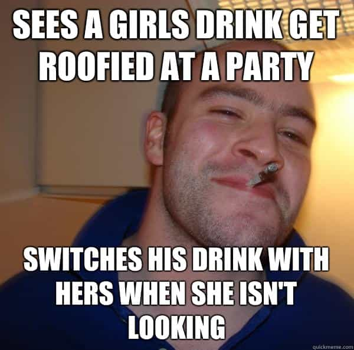
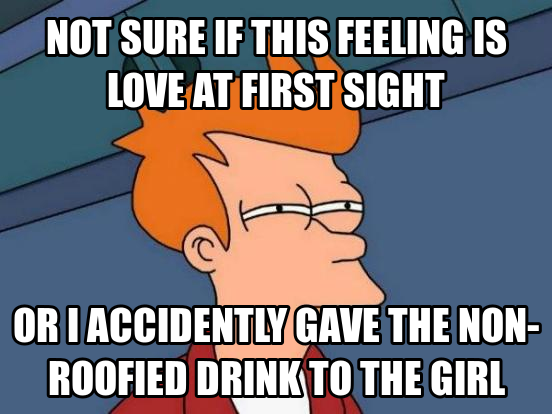

< < < Back
The Myth of Date Rape Drink Spiking – Return Of Kings
I remember the first—and last—time someone tried to roofie a girl I knew. It was years ago in college. I was at a house party with some friends when we noticed that “Samantha,” one of the girls with us, had suddenly gone catatonic and glassy-eyed, only an hour into the party. We tried to snap her out of it—shaking her, waving our hands in front of her face, shouting “Earth to Sam!”—but she just stared at us. We figured that some creep had slipped her a mickey while her back was turned, so a couple of her girlfriends walked her home.
Paradoxically, that incident made me realize that date rape drink spiking is a myth.
Oh sure, Sam had been roofied, that much was obvious. But the idea that there are hordes of women having their drinks spiked so strange men can drag them into dark alleyways to violate them is a complete lie. Here are three reasons why…

1. Most women who go out drinking aren’t alone.
Every single girl I’ve ever known who goes out to bars and parties does so with her friends. If she gets roofied, they’re going to notice her acting strangely, like we did with Sam. How exactly is a potential rapist supposed to peel away an obviously drugged woman away from her friends?
2. Assuming the girl is alone, you still have to isolate her somehow.
Every date rape drug that is potent enough to make a woman incapable of defending herself from a rapist also incapacitates her to the point where onlookers can visibly see that something is wrong with her. In order to forcibly penetrate her vagina, our rapist has to drag an unconscious or barely conscious girl past throngs of club/bar patrons or partygoers, bouncers, security cameras and any number of people who can notice what he’s doing and stop him. What’s the likelihood of anyone getting away with that?

3. Who gets off on having sex with an inert object?
Women honestly believe that men are such horny pigs that they’ll fuck anything, even a woman who is completely unresponsive and uninterested. It’s not true. As Jim Goad put it (NSFW), most men are turned off by a lack of consent. Every guy has a horror story about a girl who was a dead fish in bed, refusing to react to anything he did to her. The reason why Fleshlights, blow-up dolls and other male sex toys will never be as popular as vibrators is because most guys find the idea of banging an inanimate object to be repulsive.
So, let’s recap: a man who wants to date rape a girl has to not only drug her, but somehow get her to a secluded spot where he can get his rape on without getting caught by her friends or the multitudes of human beings around him. If even the slightest thing goes wrong, he’s looking at jail time and worse. And even if he succeeds, all he has to look forward to is a few minutes of sex with what’s basically a living corpse.
If you’re going to go to all that effort to drug and rape a girl without getting caught, why not just ask her out? You’ll have the same chance of success, you’ll actually end up enjoying banging her if you do take her home, and most importantly, you’re not breaking the law.
The only conclusion is that most of the girls who claim to have been roofied are lying. They’re using it as an excuse to binge drink and act out without having to own up to the consequences: “It wasn’t my fault I blacked out and threw up all over myself! I was drugged!” Additionally, ugly and fat girls are probably claiming to be roofied as a way of deluding themselves into thinking they’re attractive: “I’m so hot that men are drugging me just to have a shot at me!” Every major study on the subject has proven that date rape drink spiking is rare at best:
Nick Ross, chair of the Jill Dando Institute of Crime Science, commented: “There is no evidence of widespread use of hypnotics in sexual assault, let alone Rohypnol, despite many attempts to prove the contrary.
“During thousands of blood and alcohol tests lots of judgement-impairing compounds were discovered, but they were mostly street drugs or prescription pharmaceuticals taken by the victims themselves, and above all alcohol was the common theme.
The myth of date rape drink spiking persists because it lets women blame their problems on men and avoid taking responsibility for their actions. So the next time a girl tells you she was drugged, demand evidence. If she can’t provide it, call her out for being a liar. Small steps towards a better world.
 If you like this article and are concerned about the future of the Western world, check out Roosh's book Free Speech Isn't Free. It gives an inside look to how the globalist establishment is attempting to marginalize masculine men with a leftist agenda that promotes censorship, feminism, and sterility. It also shares key knowledge and tools that you can use to defend yourself against social justice attacks. Click here to learn more about the book. Your support will help maintain our operation.
If you like this article and are concerned about the future of the Western world, check out Roosh's book Free Speech Isn't Free. It gives an inside look to how the globalist establishment is attempting to marginalize masculine men with a leftist agenda that promotes censorship, feminism, and sterility. It also shares key knowledge and tools that you can use to defend yourself against social justice attacks. Click here to learn more about the book. Your support will help maintain our operation.
Read More: 3 Signs She’s Making A False Rape Accusation


{kind=link}
{kind=link}
{kind=link}